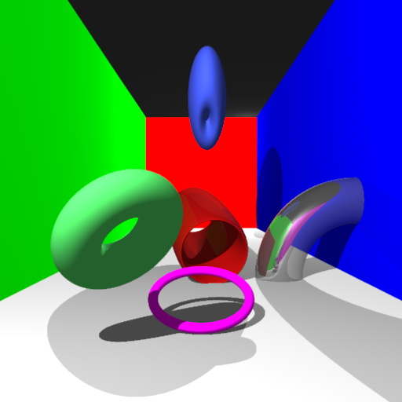
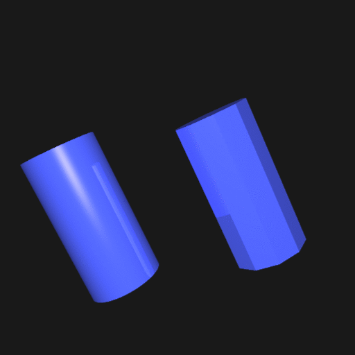

Objective 1: Cylinder and Torus


Torus and cylinder were implemented as extra primitives. A torus is created by specifying the radius of its "tube". Both are set to standard sizes and can then be transformed, as with all other primitives.
Torus intersections are computed as the result of a quartic equation. Cylinder intersections are done by intersecting with an infinite cylinder then checking against the cylinder height.
The second image shows the cylinder primitive on the left, and a basic mesh of a cylinder on the right.